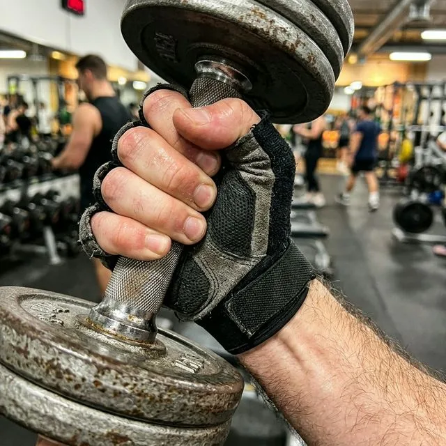
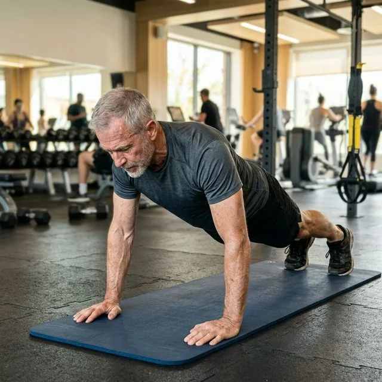
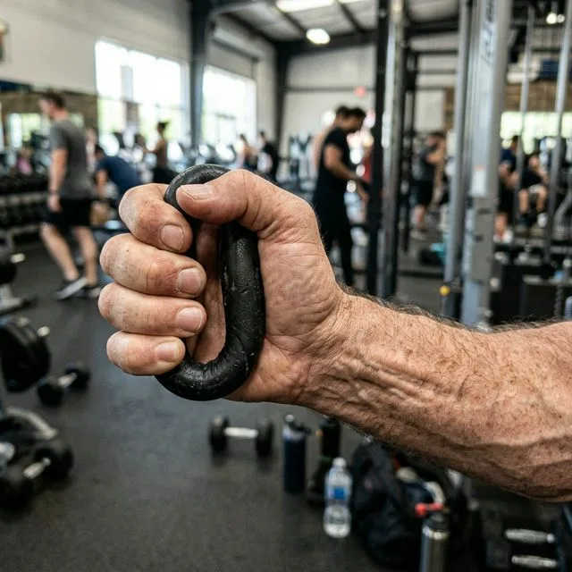
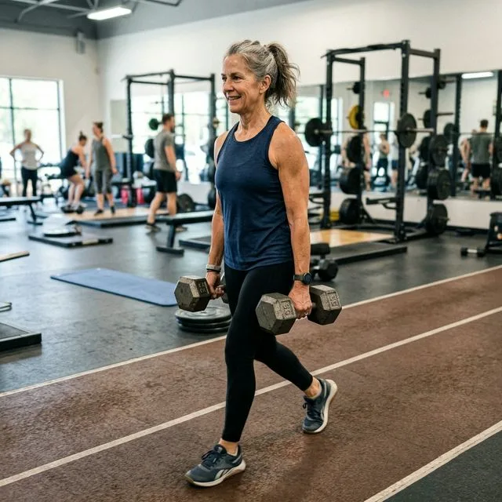
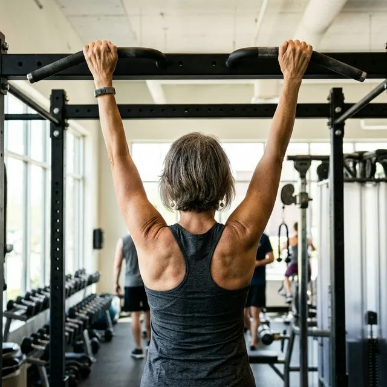
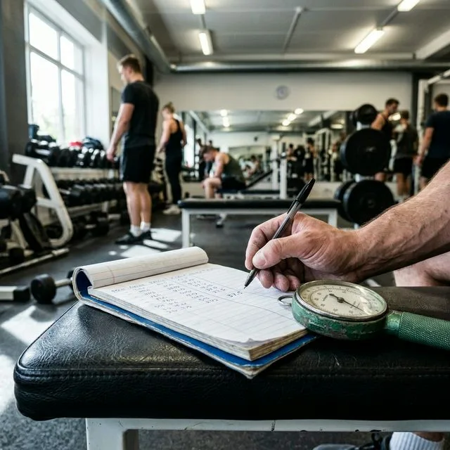

Gdyby ktokolwiek powiedział Ci, że siła ucisku Twojej dłoni może być zaskakująco dobrym wskaźnikiem ogólnego ryzyka zdrowotnego — nie uwierzyłbyś. A jednak właśnie taki kierunek pokazuje jedno z najważniejszych badań ostatnich dekad. Opublikowane w The Lancet. Na próbie prawie 140 000 ludzi z 17 krajów.
Kluczowe wnioski
- Najważniejsze: Gdyby ktokolwiek powiedział Ci, że siła ucisku Twojej dłoni może być zaskakująco dobrym wskaźnikiem ogólnego ryzyka zdrowotnego — nie uwierzyłbyś.
- W artykule znajdziesz konkrety o: Jedno ściśnięcie, które wszystko mierzy.
- Drugi kluczowy temat: Dlaczego dłoń — wyjaśnione prosto.
Jedno ściśnięcie, które wszystko mierzy
W 2015 roku w The Lancet — jednym z najbardziej prestiżowych pism medycznych na świecie — ukazało się badanie, które zaskoczyło nawet kardiologów. Zespół naukowców z 17 krajów przez 4 lata śledził zdrowie 139 691 osób w wieku 35–70 lat. Mierzono im wiele rzeczy — ciśnienie, cholesterol, poziom aktywności, palenie, alkohol. I jedno nieoczekiwane: siłę chwytu dłoni. Wynik był jednoznaczny i zaskakujący:
„Siła chwytu dłoni okazała się silniejszym predykatorem śmiertelności ogólnej i śmiertelności sercowo-naczyniowej niż skurczowe ciśnienie tętnicze. Każdy spadek siły chwytu o 5 kg związany był z 16% wyższym ryzykiem śmierci z jakiejkolwiek przyczyny, 17% wyższym ryzykiem śmierci z przyczyn sercowo-naczyniowych, 9% wyższym ryzykiem udaru i 7% wyższym ryzykiem zawału serca.”
Źródło: Leong DP et al. (2015). Prognostic value of grip strength from the Prospective Urban Rural Epidemiology (PURE) study. The Lancet. 386(9990), 266–273. doi: 10.1016/S0140-6736(14)62000-6Przeczytaj to jeszcze raz. Siła chwytu dłoni okazuje się bardzo mocnym wskaźnikiem ryzyka zawału, udaru i śmiertelności ogólnej. To nie oznacza, że ciśnienie jest nieważne. Oznacza to, że siła mięśni też daje ważną informację — i prawie nikt tego nie mierzy.
Dlaczego dłoń — wyjaśnione prosto
Może wydawać się dziwne, że siła ręki mówi coś o sercu. Przecież to dwa różne miejsca w ciele. Ale tu kryje się piękna logika biologii.
Wyobraź sobie, że Twoje ciało to siedziba. Siła uchwytu dłoni to wygląd elewacji. Jeśli elewacja jest zadbana i solidna — z dużą szansą cały budynek jest w dobrym stanie. Jeśli elewacja kruszy się i odpada tynk — wewnątrz najprawdopodobniej też nie jest dobrze.
W nauce działa to tak:
- Siła chwytu dłoni to proxy — czyli wskaźnik zastępczy — ogólnej kondycji mięśniowej całego ciała. Jeśli mięśnie dłoni są silne, najprawdopodobniej silne są też mięśnie nóg, tułowia i mięsień sercowy.
- Mięśnie szkieletowe produkują miokiny — hormony, które działają jak naturalne leki dla serca. Więcej mięśni = więcej ochrony sercowo-naczyniowej.
- Słaba siła chwytu sygnalizuje sarkopenię (utratę mięśni) — a to bezpośrednio związane z wyższym stanem zapalnym, gorszym metabolizmem glukozy i słabszą odpornością.
- Silny chwyt = człowiek aktywny, z dobrą budową mięśniową, sprawniejszym układem krążenia i niższym ryzykiem otyłości. To wszystko się skleja w jednym punkcie — dlatego jeden test mówi tak dużo.

Co jeszcze przewiduje siła chwytu — lista zaskakuje
The Lancet to nie jedyne badanie. Siła chwytu była analizowana w setkach badań i pojawia się jako predykator zdumiewająco wielu rzeczy:
Badanie UK Biobank na 445 552 uczestnikach wykazało, że niska siła chwytu jest powiązana z wyższym ryzykiem raka. Badania NHANES na populacji amerykańskiej wykazały, że siła chwytu przewiduje śmiertelność niezależnie od wieku, BMI, aktywności fizycznej i innych czynników ryzyka. Systematyczny przegląd 2 milionów uczestników potwierdził siłę mięśniową jako niezależny predykator śmiertelności ogólnej.
Konkretnie — niska siła chwytu dłoni wiąże się z wyższym ryzykiem:
- Zawału serca i udaru mózgu
- Depresji i zaburzeń nastroju
- Demencji i spadku funkcji kognitywnych
- Złamań i upadków (słabe mięśnie = zła stabilizacja)
- Powikłań pooperacyjnych i dłuższej hospitalizacji
- Pogorszonej jakości życia w starszym wieku
Jak to zmierzyć — trzy sposoby
Sposób 1: Dynamometr
Dynamometr ręczny to urządzenie, które mierzy siłę ściśnięcia w kilogramach. Jest złotym standardem w badaniach naukowych. Kosztuje 50–150 zł na Allegro. Możesz mierzyć się co miesiąc i śledzić, czy siła rośnie.
Metoda: trzykrotne ściśnięcie każdą ręką, z 30-sekundową przerwą, z ręką przy boku ciała, łokieć wyprostowany. Liczy się średnia z trzech prób dominującej ręki.
Gdzie zmierzyć bezpłatnie?
Wiele aptek sieciowych i punktów zdrowotnych ma dynamometry. Fizjoterapeuci i lekarze medycyny sportowej również. Na wizytach u fizjoterapeuty warto poprosić o pomiar – to jedno 15-sekundowe badanie.
Sposób 2: Test pompek (darmowy i szybki)
Ile pompek możesz wykonać bez przerwy? To nie jest test siły chwytu w ścisłym sensie — ale mierzy ogólną siłę mięśni górnej części ciała i jakość mięśniową.
Badanie z JAMA Network Open na 1562 dorosłych mężczyznach wykazało, że osoby, które mogą wykonać 40+ pompek, mają o 96% niższe ryzyko incydentów sercowo-naczyniowych w ciągu 10 lat niż ci, którzy mogą wykonać ich mniej niż 10.

Sposób 3: Test słoika
Otwórz zakrętkę słoika. Banalny test — ale jeśli sprawia Ci trudność, jeśli ręka się ślizga, jeśli potrzebujesz pomocy — to jest sygnał wart uwagi. Warto ocenić, jak zmienia się przez rok.
Normy — gdzie powinieneś być?
Poniższe wartości są średnio przyjętymi normami dla dynamometru (w kg). Warto wiedzieć skąd stoisz:
| Grupa | Słaba (ryzyko) | Norma | Silne |
|---|---|---|---|
| Mężczyzna 50–59 lat | < 26 kg | 26–36 kg | > 36 kg |
| Mężczyzna 60+ lat | < 23 kg | 23–32 kg | > 32 kg |
| Kobieta 50–59 lat | < 16 kg | 16–23 kg | > 23 kg |
| Kobieta 60+ lat | < 14 kg | 14–21 kg | > 21 kg |
Progi te oparte są na danych FNIH Sarcopenia Project i meta-analizach Lopez-Bueno et al. dla śmiertelności sercowo-naczyniowej. Nie są wyrocznią — ale dają punkt odniesienia. Jeśli jesteś poniżej normy — to nie diagnoza, to sygnał do działania.
Obalamy mity — jeden po drugim
| MIT | FAKT |
|---|---|
| Siła chwytu to kwestia urodzenia — nie da się tego zmienić. | Siła chwytu jest w około 50-60% determinowana genetycznie. Reszta — aktywność fizyczna, dieta, sen i styl życia. Trening siłowy poprawia siłę chwytu mierzalnie już po 6-8 tygodniach. |
| Słabe ręce to problem rąk, nie serca. | Siła chwytu to wskaźnik ogólnej siły mięśniowej, a nie izolowany problem kończyny. The Lancet i UK Biobank jasno pokazują: mówi o stanie układu krążenia. |
| Jestem po operacji i nie mogę ściskać — więc ten test mnie nie dotyczy. | Nawet oszacowanie względnej siły — lewej vs prawej, teraz vs rok temu — daje informację. Trend jest ważniejszy niż jedna liczba. |
| Mam 65 lat, więc z siłą chwytu już nic nie zrobię. | Badania wykazują, że trening oporowy u osób po 65-tce poprawia siłę chwytu średnio o 25–30% po 12 tygodniach. Nie ma granicy wieku dla poprawy. |
| Niski wynik to wyrok — jestem skazany na choroby. | Niski wynik to sygnał alarmowy, nie diagnoza. To informacja, że warto zacząć działać. To samo co niskie ciśnienie skurczowe — sygnał, nie wyrok. |

Jak poprawić siłę chwytu — działania z dowodem naukowym
To najważniejsza część artykułu. Bo siła chwytu nie jest stała. Można ją poprawić. I poprawiając ją — poprawiasz wszystko co ona mierzy.
1. Trening siłowy — jedyna metoda z twardymi dowodami
Każde ćwiczenie siłowe angażujące całe ciało — maszyny, wolne ciężary, guma oporowa — poprawia siłę chwytu. Szczególnie ćwiczenia chwytowe: wioślarz, wyciąg górny, martwy ciąg z kettlem.
Metaanaliza 32 badań RCT wykazała, że programy ćwiczeń oporowych u starszych osób poprawiają siłę chwytu średnio o 2–4 kg w ciągu 12 tygodni. Efekt jest istotny statystycznie i klinicznie nawet przy treningu 2x w tygodniu.
Źródło: Lopez-Bueno R. et al. (2022). Thresholds of handgrip strength for all-cause, cancer and cardiovascular mortality: a systematic review with dose-response meta-analysis. Ageing Research Reviews. DOI: 10.1016/j.arr.2022.101757

2. Ćwiczenia specyficzne dla chwytu
- Farmer carry — idziesz z ciężkimi hantlami przy bokach. Banalnie proste, ekstremalnie skuteczne.
- Ściskanie piłeczki rehabilitacyjnej lub ekspandera — prosty trening chwytu w domu, w samochodzie, wszędzie.
- Wieszanie na drążku — nawet 20 sekund dziennie, ciężar ciała jako obciążenie.
- Otwieranie słoików silniejszą ręką — żart, ale nie do końca. Codzienne czynności z oporem liczą się.

3. Białko — mięśnie bez budulca nie powstaną
Siła chwytu spada nie tylko przez brak ćwiczeń — także przez niedobory białka. Każdy kilogram mięśni wymaga aminokwasów z jedzenia. Cel dla osoby po 50-tce: 1,5–2 g białka na kg masy ciała dziennie. Większość osób po 50-tce dostarcza go zbyt mało.
Mierz się raz na kwartał — i śledź trend
Jeden pomiar nic nie mówi. Trend przez rok mówi wszystko. Zanotuj dziś wynik, zmierz się za 3 miesiące po treningu i poprawie diety. Jeśli rośnie — idziesz w dobrym kierunku. Jeśli spada — to sygnał, żeby przyjrzeć się treningowi, diecie i zdrowiu.
Prosta tabela: data, wynik lewej ręki, wynik prawej ręki, średnia. Tyle. Nic więcej nie potrzebujesz.

„Siła chwytu dłoni to prosta, tania i szybka metoda stratyfikacji ryzyka śmierci ogólnej, śmierci sercowo-naczyniowej i chorób układu krążenia. Można ją rekomendować jako element rutynowej oceny zdrowia.”
— Leong DP et al. — The Lancet, 2015. Wniosek badania na 139 691 uczestnikach z 17 krajów.Zaciśnij dłoń. Zmierz. Zanotuj. I zacznij ćwiczyć. Nie dlatego że liczba jest zła — ale dlatego że za rok może być lepsza. I wtedy będziesz widział, że Twoja ogólna sprawność idzie w dobrą stronę.
Źródła
FAQ
Co mówi siła chwytu o zdrowiu po 50?
Siła chwytu jest prostym wskaźnikiem ogólnej sprawności i bywa powiązana z ryzykiem problemów zdrowotnych. Spadek chwytu może sygnalizować potrzebę pracy nad siłą całego ciała.
Jak poprawić siłę chwytu po 50 w domu?
Dobrze działają regularne ćwiczenia dłoni i przedramion oraz trening siłowy całego ciała. Kluczowa jest systematyczność i stopniowanie obciążenia.
Czy słaby chwyt po 50 oznacza chorobę?
Nie zawsze, ale warto potraktować to jako sygnał do oceny sprawności i stylu życia. Gdy osłabienie narasta lub jest asymetryczne, wskazana jest konsultacja.